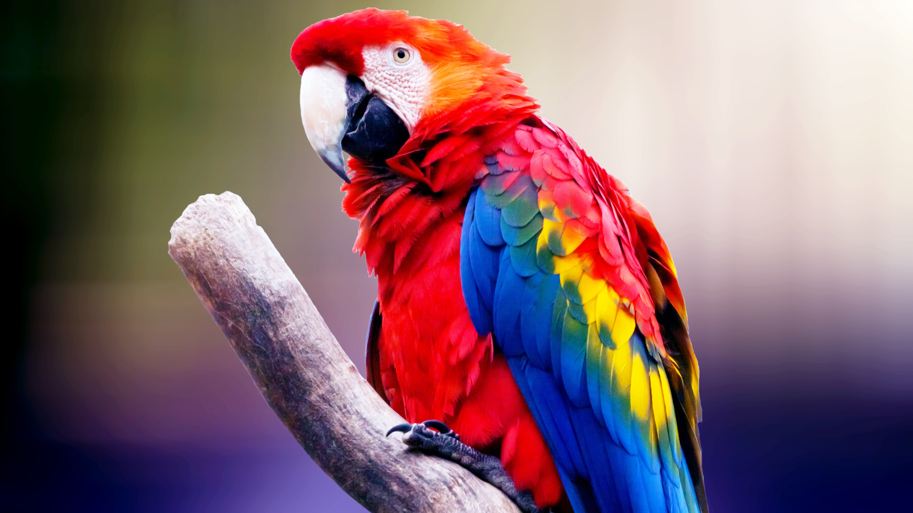

| Parrot: | Type Parrot: |
| Parrot are a diverse group of birds known for their distinctive features, a strong, curved beak, zygodactyl feet (two toes facing forward and two facing backward), and a generally colorful plumage. They belong to the order Psittaciformes, and this group includes more than 393 species. |
1.African Grey Parrot (Psittacus erithacus): 2.Cockatoos (Various Species): 3.Macaws (Various Species): 4.Amazon Parrots (Various Species): |